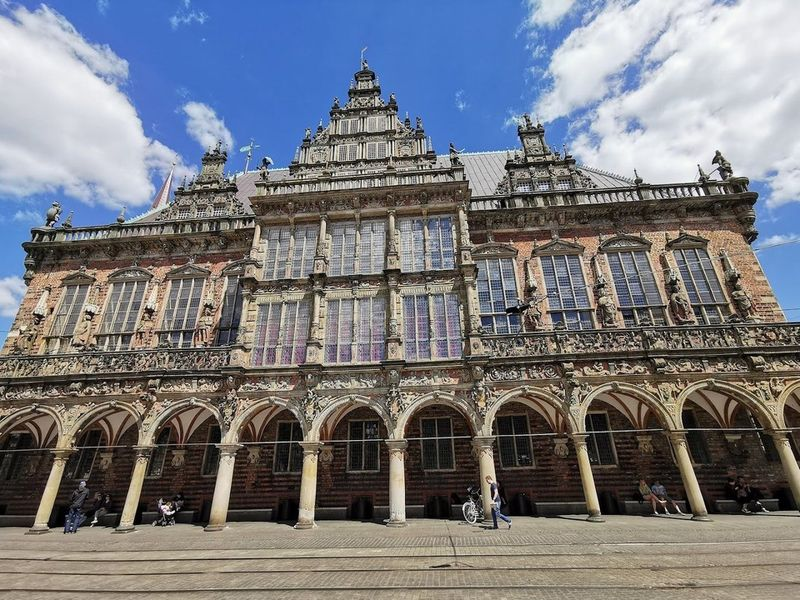
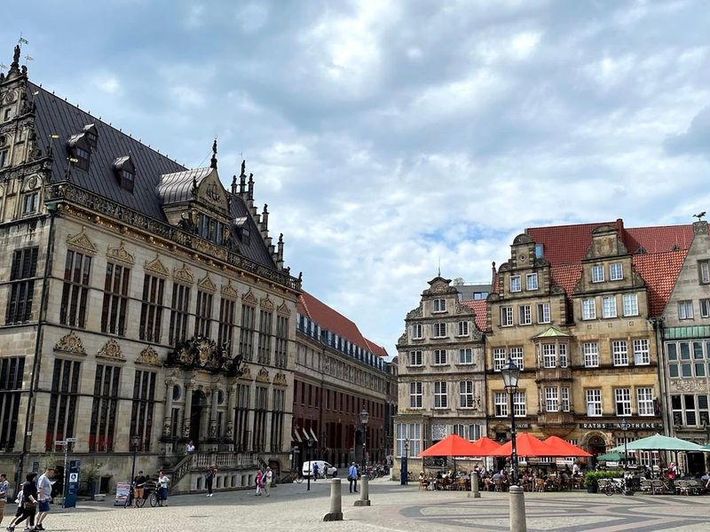
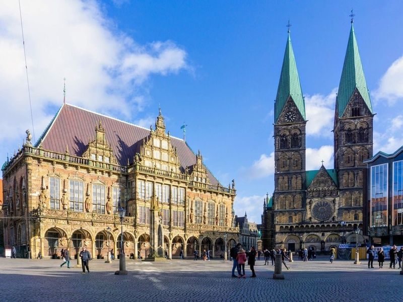
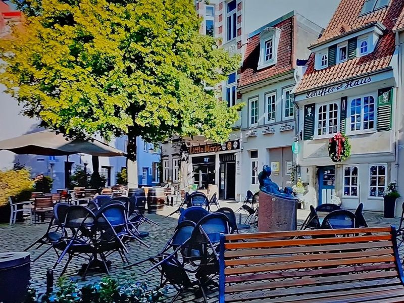
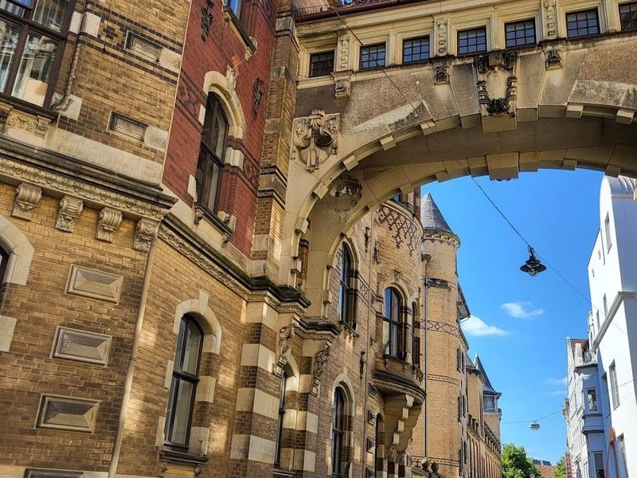
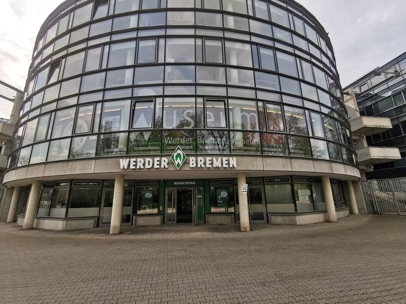
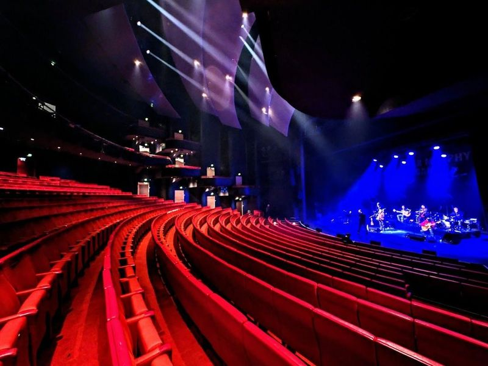
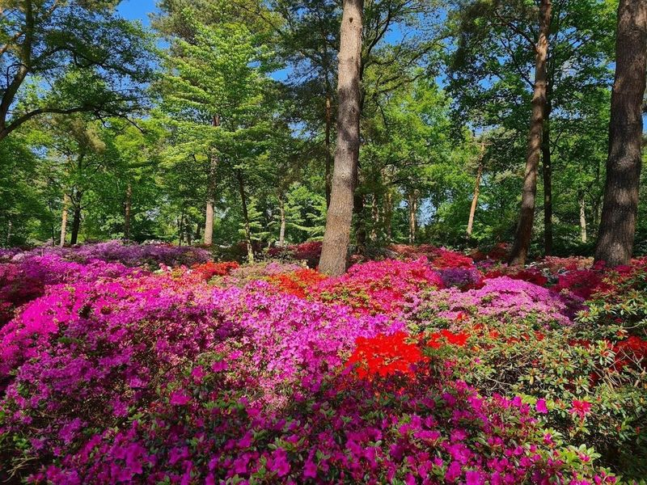
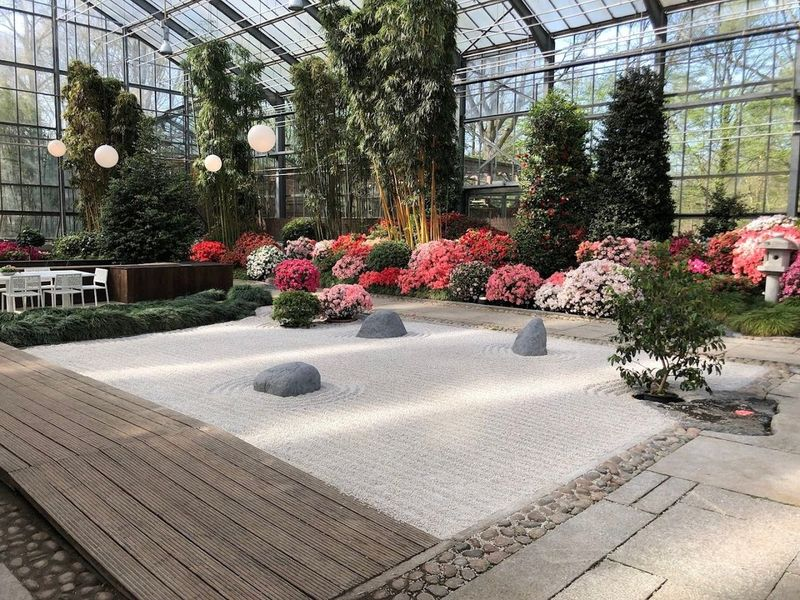
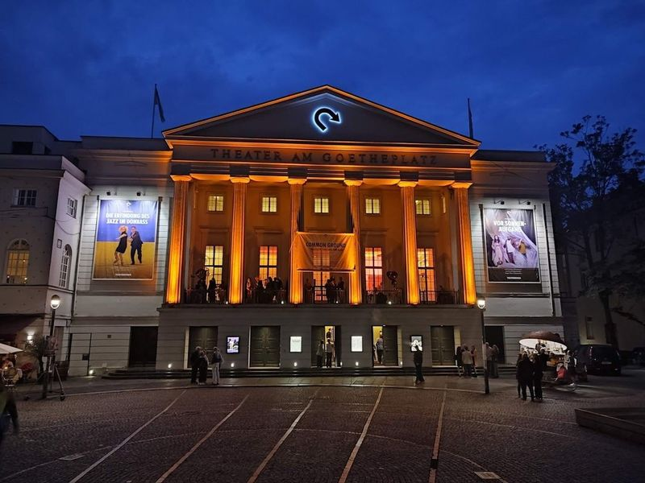

Explore Bremen
A Brief History
Bremen gained independence as a medieval Hanseatic port on the Weser River, trading wool, beer, and later coffee across the North Sea. The Roland statue and Gothic town hall on the market square date from the 15th century. The nearby Bremer Stadtmusikanten statue reflects a Brothers Grimm tale tied to local identity. Bremen and Bremerhaven form one federal state, with shipyards and maritime museums recording seafaring history.
Attractions Map
Top Sights & Activities

Town Musicians of Bremen
The Bremer Stadtmusikanten bronze statue by Gerhard Marcks stands beside the Rathaus since 1953, depicting the donkey, dog, cat, and rooster from the Brothers Grimm fairy tale collected in 1819. Touching the donkey's front legs is a local tradition said to grant a return to Bremen. The sculpture anchors the west side of the market square.

Bremen Market Square
Bremen's Marktplatz has served as the civic centre since the 8th century, framed by the UNESCO-listed Rathaus and Roland statue symbolising urban freedom. Guild houses with stepped gables line the cobbled square where weekly markets and Christmas fairs take place. Guided tours of the town hall interior visit the Upper Hall and Golden Chamber.

Bremen Cathedral
St. Petri Dom on the east side of the market square was begun around 1042 on a site used since Charlemagne founded the diocese in 787. Romanesque nave, Gothic choir, and twin towers reflect centuries of archiepiscopal patronage. The cathedral remains the seat of a Protestant congregation and houses medieval crypts and a cathedral museum.

Schnoor Bremen
The Schnoor is Bremen's oldest inhabited quarter, a maze of narrow lanes and 15th-century fishermen's cottages south of the Dom. Craft workshops, galleries, and cafés occupy the timber-framed houses whose name derives from the rope-making trade. The district survived wartime bombing and now forms a preserved pedestrian neighbourhood.

Forum am Wall
The Forum am Wall is a neo-Renaissance building from 1908 on the former city ramparts near the Schnoor quarter. It houses the Bremen State and University Library reading rooms behind its sandstone façade. The surrounding Wallanlagen park traces the line of medieval fortifications along the Weser shore.

Weser Stadium
The wohninvest Weserstadion beside the Weser River is the home ground of SV Werder Bremen since 1924, rebuilt and expanded several times to seat about 42,000 spectators. Public stadium tours include the Wuseum club museum, dressing rooms, and players' tunnel on non-match days. The ground hosted matches during the 1974 and 2006 FIFA World Cups.

Metropol Theater Bremen
The Metropol Theater on the Bürgerweide opened in 1999 as a purpose-built musical venue with about 1,450 seats. Touring productions of West End and Broadway musicals fill the schedule alongside concerts and variety shows. The glass-fronted building stands near the Hauptbahnhof east of the old town.

Rhododendron-Park Bremen
The Rhododendron-Park in the Horn-Lehe district holds one of the world's largest collections of rhododendrons and azaleas across 46 hectares. More than 10,000 shrubs bloom from April through June in themed sections linked by woodland paths. Entry to the open park grounds is free year-round apart from special events.

botanika
botanika is a nature discovery centre within the Rhododendron-Park, opened in 2003 to present Himalayan, Japanese, and Bornean plant communities in climate-controlled greenhouses. Outdoor trails connect the biomes with the surrounding rhododendron collections. The centre targets families and school groups with interactive exhibits on biodiversity.

Theater am Goetheplatz
The Theater am Goetheplatz, opened in 1913, is Bremen's municipal theatre for opera, drama, and dance on Goetheplatz in the cultural quarter. The neoclassical auditorium and adjoining Kammerspiele stage form the largest theatre ensemble in the city-state. The building survived wartime damage and was restored in the post-war decades.